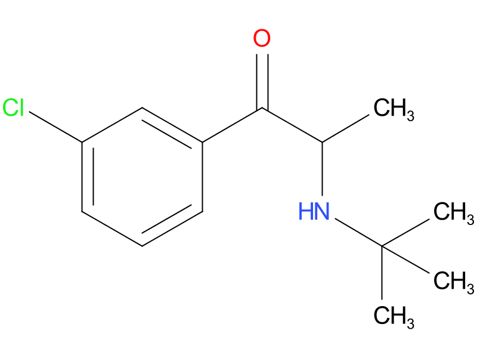
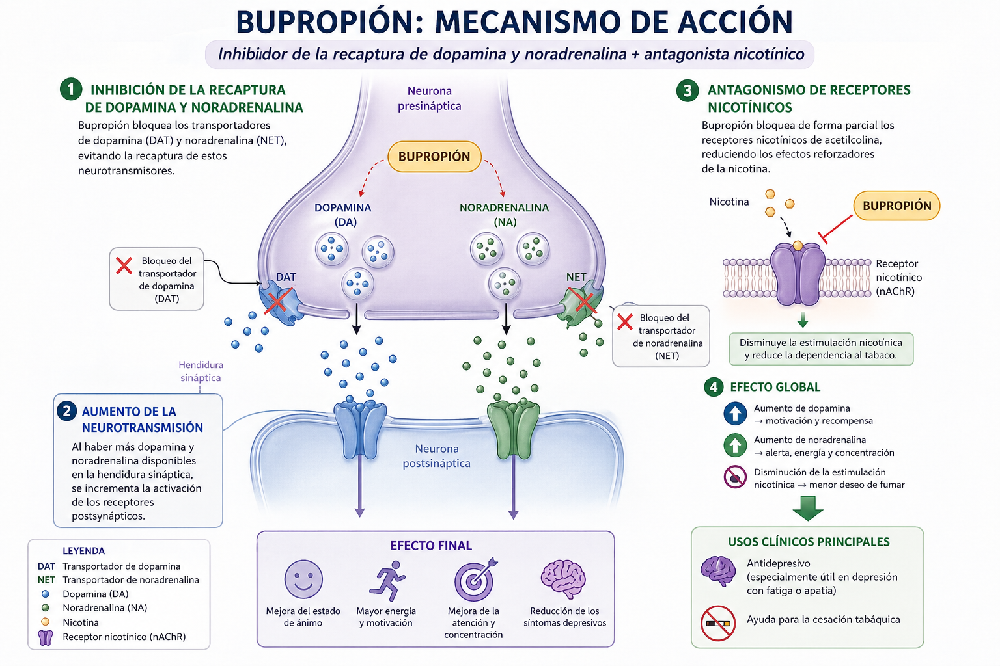

El Bupropión atraviesa la barrera hematoencefálica y se distribuye en diversas regiones del sistema nervioso central, especialmente en áreas relacionadas con el control del estado de ánimo, la motivación y la recompensa, como la corteza prefrontal y el sistema límbico.
Una vez en la terminal presináptica, el bupropión inhibe de manera selectiva los transportadores de recaptación de dopamina (DAT) y noradrenalina (NET), uniéndose a ellos y disminuyendo su capacidad de transportar estos neurotransmisores de regreso al interior de la neurona.
En condiciones normales, tras la liberación sináptica, la dopamina y la noradrenalina son recaptadas rápidamente, limitando su efecto; sin embargo, la presencia del fármaco prolonga su permanencia en la hendidura sináptica, aumentando su concentración extracelular.
Cuando estos neurotransmisores permanecen más tiempo disponibles, se incrementa la estimulación de los receptores postsinápticos dopaminérgicos y adrenérgicos, lo que potencia la transmisión sináptica en circuitos relacionados con la energía, la atención y el estado de ánimo.
Además, el bupropión actúa como antagonista no competitivo de los receptores nicotínicos de acetilcolina, uniéndose a ellos en un sitio distinto al de la acetilcolina e impidiendo su activación completa.
Al bloquear estos receptores, se reduce la liberación de dopamina inducida por la nicotina en el sistema de recompensa, disminuyendo el refuerzo positivo asociado al consumo de tabaco.
Como consecuencia, se modulan tanto los circuitos dopaminérgicos como noradrenérgicos, aumentando la actividad catecolaminérgica sin un efecto significativo sobre la serotonina.
Como resultado final, se mejora el estado de ánimo, la motivación y la concentración, y se reduce el deseo de consumir nicotina, sin generar los efectos típicos de los antidepresivos serotoninérgicos.
El Bupropión actúa principalmente bloqueando la recaptación de dopamina y noradrenalina en el cerebro, lo que hace que estos neurotransmisores permanezcan más tiempo activos en el espacio sináptico. Esto aumenta la comunicación entre neuronas en áreas relacionadas con el ánimo, la energía y la atención, ayudando a mejorar los síntomas depresivos.
Además, también bloquea receptores nicotínicos, lo que reduce el efecto de la nicotina sobre el sistema de recompensa cerebral. Por eso, no solo funciona como antidepresivo, sino que también ayuda a disminuir el deseo de fumar, facilitando el abandono del tabaco sin afectar de forma importante otros sistemas como el de la serotonina.
Audio explicativo
Material visual

